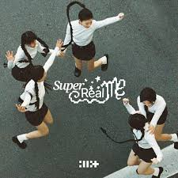

Magnetic
ILLIT
Baby, I'm just trying to play it cool
But I just can't hide that I want you
Wait a minute, 이게 뭐지? (뭐지?)
내 심장이 lub-dub, 자꾸만 뛰어 (뛰어)
저 멀리서도, oh, (oh) my (my) gosh (gosh)
끌어당겨, you're my crush, 초능력처럼
거대한 자석이 된 것만 같아 my heart
네 모든 게 내 맘에 달라붙어버려, boy
We're magnetized, 인정할게
This time, I want
You, you, you, you, like it's magnetic
You, you, you, you, you, you, you, you, super 이끌림
You, you, you, you, like it's magnetic
You, you, you, you, you, you, you, you, super 이끌림
Bae, bae, bae, bae, bae, bae, bae, bae, bae
Dash-da-da, dash-da-da, dash-da, like it's magnetic
Bae, bae, bae, bae, bae, bae, bae, bae, bae
Dash-da-da, dash-da-da, baby, don't say no
정반대 같아 our type, 넌 J, 난 완전 PS와 N
극이지만, 그래서 끌리지
내가 만들래 green light, 여잔 배짱이지
So let's go, let's go, let's go, let's go
숨기고 싶지 않아 자석 같은 my heart
내 맘의 끌림대로 너를 향해 갈게, boy
We're magnetized, 인정할게
This time, I want
You, you, you, you, like it's magnetic
You, you, you, you, you, you, you, you, super 이끌림
You, you, you, you, like it's magnetic
You, you, you, you, you, you, you, you, super 이끌림
No push and pull, 전속력으로 너에게 갈게 (in a rush, in a rush)
Our chemistry, 난 과몰입해 지금 순간에
(baby, you're my crush, you're my crush)
No push and pull, 네게 집중 후회는 안 할래
(gonna dash, gonna dash)
Never holding back, 직진해,
yeah (직진해, yeah), this time, I want
You, you, you, you, like it's magnetic
You, you, you, you, you, you, you, you, super 이끌림
You, you, you, you, like it's magnetic
You, you, you, you, you, you, you, you, super 이끌림
Bae, bae, bae, bae, bae, bae, bae, bae, bae
Dash-da-da, dash-da-da, dash-da, like it's magnetic
Bae, bae, bae, bae, bae, bae, bae, bae, bae
Dash-da-da, dash-da-da, baby, don't say no